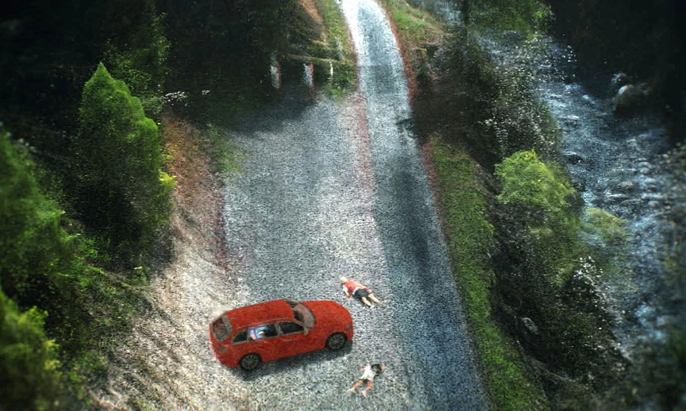
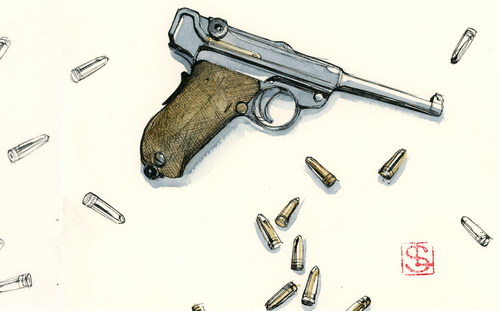

Please press space to move forward.
Listen with headset 🎧 for a better experience. (optional)
This tragic event shocked the world and remains unsolved.
A Chronological Reconstruction of an Unsolved Mystery
Four people were found dead near Lake Annecy in the French Alps. Saad Al-Hilli, a British-Iraqi as well as his wife, Iqbal and his mother. The last victim is Sylvain Mollier, A French cyclist
To this day, after years of investigations in multiple countries, the case remains unsolved.
This is the story of the Chevaline slaughter.
But first...
Let's get back to the beggining.
British cyclist Brett Martin ventured into a secluded parking area near Chevaline. His gaze fell upon a BMW estate car, its engine purring like a restless beast, wheels spinning in a haunting dance.

As he drew closer, a chilling tableau unfolded before him: three adults lay lifeless, their bodies strewn around the vehicle in a tragic embrace of violence. Nearby, the body of a French cyclist, Sylvain Mollier, rested in eternal silence, a poignant reminder of dreams cut short.
In that moment, the weight of despair settled upon Martin’s heart, compelling him to act. He swiftly reached for his phone, summoning the echoes of hope as he alerted emergency services, igniting the flicker of an official response amidst the darkness.
French authorities arrived with urgency, their presence a flicker of order amidst the chaos, as they secured the crime scene and initiated their preliminary investigations. Yet, in those harrowing first moments, critical oversights cast a shadow over their efforts.
Beneath the stillness of her mother’s body lay four-year-old Zeena Al-Hilli. Meanwhile, her older sister, Zainab, gravely injured, was whisked away to a nearby hospital, a desperate journey toward hope and healing amid the overwhelming darkness. The echoes of their plight lingered in the air, a haunting reminder of the fragility of life and the bonds of family.

The grim identities of the victims emerged from the shadows: Saad Al-Hilli, his beloved wife Iqbal, her mother Suhaila Al-Allaf, and the local cyclist Sylvain Mollier. Each name carried a weight of sorrow, weaving a tapestry of tragedy that spanned borders and cultures.

As the sun rose on this dark chapter, the international dimension of the case became painfully clear. The urgency of the investigation ignited a fervent collaboration between French and British authorities. Together, they sought to unravel the threads of this horrific tapestry, driven by the need for justice and the desire to honor the lives lost in such a brutal manner. The world watched, holding its breath, as the quest for answers began to unfold.
Zeena Al-Hilli was finally discovered unharmed but traumatized. Investigators began interviewing witnesses, including Brett Martin, and examining potential motives, such as family disputes and professional espionage.
Authorities turned their attention to Zaid Al-Hilli, Saad’s own brother, pressing him for answers about a lingering inheritance dispute that cast a long shadow over the tragedy. Yet, despite the mounting suspicions, no arrests came. The mystery only deepened, drawing investigators further into its tangled web.
The case attracted intense media attention, complicating investigative efforts. French and British authorities coordinated closely, but procedural differences slowed progress.
Forensic teams analyzed ballistic evidence, concluding that a single weapon was likely used. Witnesses reported seeing a mysterious motorcyclist near the scene, prompting extensive searches and appeals for information.
Despite relentless efforts, the investigation remained shrouded in uncertainty—no clear suspect emerged from the labyrinth of clues. With each passing day, the weight of expectation grew heavier, as the public and media demanded answers.
Investigators pursued numerous leads, including re-examining family disputes, professional espionage theories, and local suspects. Despite these efforts, the investigation faced significant obstacles, including lost evidence, procedural errors, and fading public interest. Gradually, the Chevaline murders became a cold case, with investigative resources diminishing and public attention waning.
Investigators turned once more to the surviving daughters, hoping that time had sharpened their memories, that the veil of childhood innocence had lifted just enough to reveal hidden truths. With the utmost care, they revisited the painful past, treading gently through the fragile remnants of trauma. Yet, despite their delicate approach and the passing years, the echoes of that fateful day remained elusive, offering little more than the ghosts of unanswered questions.
A spark of hope flickered in the darkness as investigators spoke with renewed confidence, buoyed by fresh leads and the relentless march of forensic advancements. Then, a revelation sent ripples through the silence, a potential suspect had been identified. Though justice remained just out of reach, the mere possibility reignited the embers of a case long thought to be fading into obscurity.
Significant revelations emerged regarding critical errors made during the initial investigation. Reports indicated that the crime scene had been prematurely cleaned, resulting in the loss of potentially crucial forensic evidence. Additionally, data management errors led to the loss of important investigative information, severely hindering progress.
Despite the setbacks that had plagued the investigation, authorities pressed forward, their resolve unbroken. They turned to the cutting edge of forensic science, employing advanced genetic testing in a final, desperate attempt to uncover the DNA traces that had once gone unnoticed at the crime scene.
These new methods breathed life into the case once more, offering a glimmer of hope that the secrets of the Chevaline murders might at last be revealed. A renewed sense of possibility swept over the investigation, as the long-awaited truth seemed just within reach.
Thank you for taking the time to view this presentation on the Chevaline Murders.
marianne (10/18/2024) / marianne (05/02/2024) / marianne (02/17/2022) / 20minutes.fr / bfmtv / rtl / Documentaire canal+ / Podcast Le Parisien